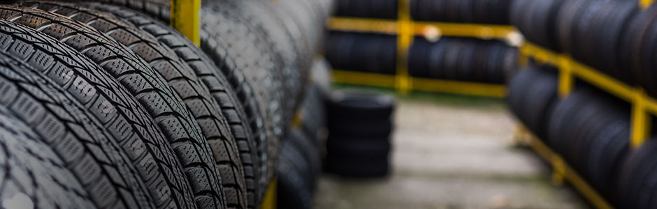

자동차 주행 중 타이어가 터지거나 찢어지는 걸 막아주고 안정성을 높이기 위해 타이어 내부에 들어가는 보강재, 일명 타이어코드입니다.
소비자들에겐 낯설지만 최장 3년의 승인 과정을 거칠 정도로 자동차의 안전과 성능에 영향을 미치는 핵심 소재입니다.
해외 타이어 브랜드인 미쉐린과 굿이어뿐만 아니라 일본 브랜드인 브리지스톤과 요코하마에도 쓰이고 있습니다.
<인터뷰>김병수 / 효성첨단소재 울산공장 생산1팀장
“효성 타이어코드는 주원료인 폴리에스터 칩뿐만 아니라 칩의 원료인 TPA(테레프탈산)도 자체 생산이 가능한 일괄 생산체제를 갖추고 있어 공급 안정성 측면에서 우수하며 원천기술력을 바탕으로 고객의 다양한 요구를 만족시키는 제품군을 자체 개발하고 있습니다."
자체 기술을 개발해 지난 1968년부터 반세기 넘게 타이어코드를 생산해온 효성은 45%의 글로벌 점유율로 타이어코드 시장에서 19년 연속 선두 자리를 달리고 있습니다.
“이뿐만 아니라 현재는 친환경 트렌드에 맞춰 연비는 높이고 무게는 가볍게 하는 제품 개발에도 적극적으로 나서고 있습니다.”
2019.09.01